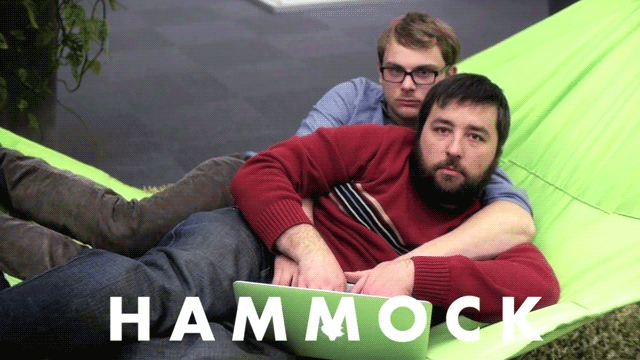

Pair Programming
1/26/16
Pair programming is an agile software development technique where two programmers work as a pair together at one workstation. The team identifies one programmer as the “driver” and the other as “navigator”. The driver’s responsibility is to physically type code in to the computer. The navigator is responsible for researching syntax and reviewing code as it is created. It is both the navigator and driver’s responsibility to work as a team, determining the best way to achieve their goal. It is very common for pair programming teams to pseudocode before getting started to ensure everyone is on the same page.
The Debate and The Facts
There is a lot of debate over whether pair programming is a positive practice. Many people and companies swear by it. Famous development shops such as Pivotal Labs in San Francisco and Xtreme Labs in Toronto have adopted a 100% pair programming workforce. There are studies that show “for a development-time cost of about 15%, pair programming improves design quality, reduces defect, reduces staffing risk, enhances technical skills, improves team communications, and is considered more enjoyable at statistically significant levels.”
This description makes pair programming sounds like a no-brainer! With benefits such as these, why wouldn’t you opt for coding as a team?
Well, it is expensive. Two developers instead of one? These developers would have to catch a significant amount of bugs and prove incredibly efficient in order to recoup the costs of an additional developer. On a more qualitative side, some worry that working in a team 100% of the time will actually make you less creative. One study shows that “solitude is a catalyst for innovation”. Does taking away from this alone time, with the rise of pair programming and open offices, mean we are stifling individual creativity?
My Pair Programming Experience
I don’t thinks so. Although, it does depend on the programmer.
Over the past few weeks I have taken part in pair programming for the first time. Driving, navigating, three times a week over five weeks. Working with a partner to solve a challenge. It has been a really cool experience, and it has, of course, given me a very strong opinion of pair programming.
Whatever the research says, pair programming is awesome, in moderation.
When you are actively solving a problem with your pair, you generate more potential solutions and therefore have a greater chance of selecting the best idea. Two heads are better than one. Pair programming is also a great way to share knowledge. Whether my partner shares new methods, concepts, or even general ideas to research on my own time, pair programming has proven to be the best way for me personally to learn. It is also incredibly rewarding to share knowledge with my pair whenever I get the chance.
But for me, the winning factor in pair programming is the camaraderie. When you are coding all day every day, it is easy to become isolated. It can all be a bit lonely. This is what makes pair programming awesome. It turns coding in to a team effort, which can get you thinking differently and give you a break from all that one-on-one time with your computer.
While I think pair programming is amazing, I do not think it is for everyone. I happen to be an extremely extroverted person. This means I do my best work when surrounded by people. I could not be happier that many business are moving towards a more collaborate environment. However it is not surprising that with this huge push towards constant pairing, many developers are pushing back. Many people need quiet and solitude to come up with new, creative ideas. I will admit, even as a self-proclaimed extreme extrovert, I also require some alone time to concentrate and really think through new ideas.
Do I think pair programming is awesome? Yes! But - everything in moderation.
Feedback
Feedback is an incredibly essential part of pair programming. Pair programming is a skill unto itself. While code either runs, crashes, or infinitely loops, (basically you get immediate feedback if something is broken) there is no automatic feedback system for pair programming. This is why it is so important to ask your pair for feedback. This is the only way to improve at this valuable skill!
One of the really cool features of pair programming through Dev Bootcamp has been receiving feedback on my pairing skills. So far, I have received incredibly useful and mostly positive feedback! Most of my feedback has been encouragement to maintain my flexibility, enthusiasm, and desire to work well as a team whether through patience or communication. While this feedback is nice, it does not really help me improve as a pair! My best piece of constructive feedback has been that I need to speak up when I know how to solve a problem. I sometimes do not want to share an answer, even if I have it, because I do not want to dominate the teamwork with my peer. It is a difficult balance to find, and it is something I have been working on.
So, now that you know all about pair programming, go out and try it yourself! Whether you love it or hate it, it is a great skill to have under your belt. And I promise it does not have to involve a hammock.
